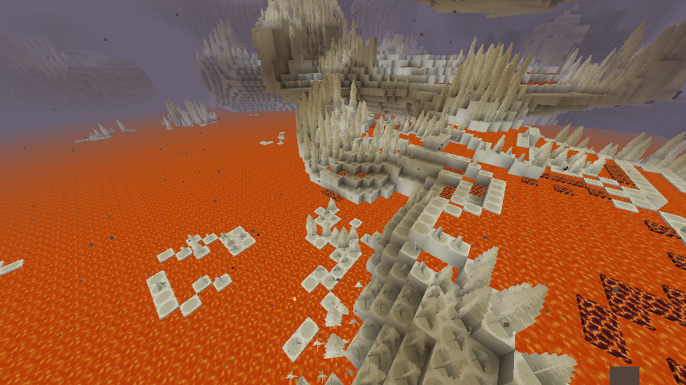
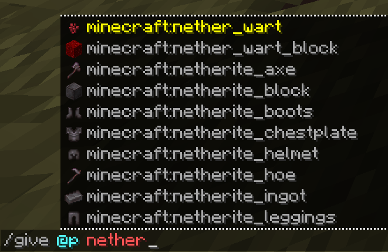

I make Minecraft mods for fun, since I have nothing else to do. I've made raytracing, reworked commands, and made every idea I could think of in a mod with no scope. Though I'm only a year into MC modding, I intend to continue for as long as I have ideas (and I have a lot in storage).


This site hosts some developer utilities (such as an MDK template generator for various setups), you can access them below: